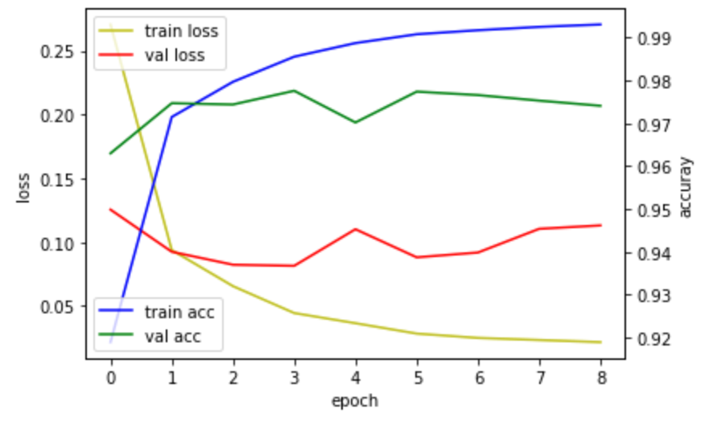

Deep Learning
In the previous post, I talked about perceptrons and their limits. There were a lot of obstacles when a single perception was used to solve a problem. In order to address this issue, the researchers decided to create multiple layers of perceptrons to narrow down to the target answer. One of the most frequently used examples is the handwriting recognition problem. In this problem, the computer develops an ability to acknowledge a handwritten number by analyzing thousands and millions of distinctive handwriting. Through repetitive training, the computer is able to distinguish a number from 0 to 9 in any form of handwriting.
Handwriting Recognition Problem
Mnist Data Set
It is an open-source that provides 70000 different handwriting data for anyone who is working on the handwriting recognition problem.

Each data was originally in a form of an image, but it has been converted into a numeric form to be suitable for problem solving. The numbers are divided into 784 grids (28 X 28), with each grid representing an amount of ink colored in. If the grid is fully shaded, it would be illustrated as 1; if the grid is empty, it would be shown as 0.
Problem Code
Now, we will look at the code closely.
import tensorflow.keras.utils as utils
from tensorflow.keras.datasets import mnist
from tensorflow.keras.models import Sequential
from tensorflow.keras.layers import Dense, Activation
import numpy as np
%matplotlib inline
import matplotlib.pyplot as plt
(X_train, Y_train), (X_test, Y_test) = mnist.load_data()
X_val = X_train[50000:]
Y_val = Y_train[50000:]
X_train = X_train[:50000]
Y_train = Y_train[:50000]First, you import the required modules for the problem. As shown above, a lot of the modules are incorporated into a big category of 'Tensor Flow'. But why did we choose to import so many different functions when we can get the job done by importing just 'Tensor Flow'? It is because importing just the functions that we need creates more concise and efficient code. For example, with just 'Tensor Flow' imported, we would have to indicate all the pathways every time we use a 'Dense' function. However, if we import the subcategorical functions at the top, we do not have to indicate the additional routes.
Next, you put 60000 data into the training set, and 10000 data into the test set by using a mnist function.
Then, you separate the data in the training set into the validation set (from 50000 to 60000) and the ultimate training set (from 0 to 50000).
X_train = X_train.reshape(50000, 784).astype('float32') / 255.0
X_val = X_val.reshape(10000, 784).astype('float32') / 255.0
X_test = X_test.reshape(10000, 784).astype('float32') / 255.0Here, you alter the shape of the data to make it appropriate as an input for perceptrons. Because multilayer perceptrons cannot accept inputs in an image layout, which is 2-dimensional, the input has to be adjusted into a 1-dimensional format.
Y_train = utils.to_categorical(Y_train)
Y_val = utils.to_categorical(Y_val)
Y_test = utils.to_categorical(Y_test)If the correct answer is '1', the computer does not perceive '1' as a human being does. It calculates a possibility of the input being number 1 (1 being the highest possibility and 0 being the lowest possibility). Thus, the computer would process '1' as being [0 1 0 0 0 0 0 0 0 0]. In order to reflect the cognitive operation of the computer, you need to change simple numeric values into the categorical portrayal.
model = Sequential()
model.add(Dense(units=512, input_dim=28*28, activation='relu'))
model.add(Dense(units=256, activation='relu'))
model.add(Dense(units=128, activation='relu'))
model.add(Dense(units=32, activation='relu'))
model.add(Dense(units=10, activation='softmax'))
model.compile(loss='categorical_crossentropy', optimizer='adam', metrics=['accuracy'])This code builds the "brain" of this entire process. The most significant part of building the multilayer perceptrons is the number of inputs in the first layer and the number of outputs in the last layer. If you have the right number for these features, you acquire the freedom to choose how many layers you want to put, how many units you want to include, and which activation function you want to use.
Then, you have to sew all these layers of perceptrons into one model.
hist = model.fit(X_train, Y_train,
verbose=1,
verbose=1,epochs=3000,
verbose=1,batch_size=100,
verbose=1,validation_data=(X_val, Y_val))This portion of the code educates the computer based on the data set provided (inputs and outputs). This function repeats the training procedure 3000 times (epoch), scrutinizes 100 data sets at one time, and checks its accuracy through validation data. I will describe more about this code in the next post.
loss_and_metrics = model.evaluate(X_test, Y_test, batch_size=32)
print('')
print('loss : ' + str(loss_and_metrics[0]))
print('accuray : ' + str(loss_and_metrics[1]))Last, this code tests the ability of the computer to differentiate numbers in random handwriting.

As a result, I was able to train the computer to do its function with an accuracy of approximately 0.97.